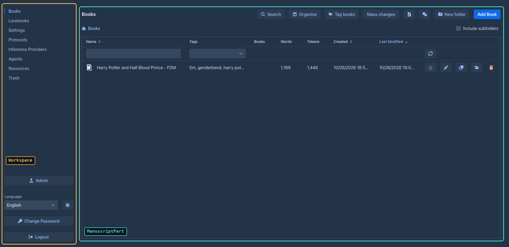
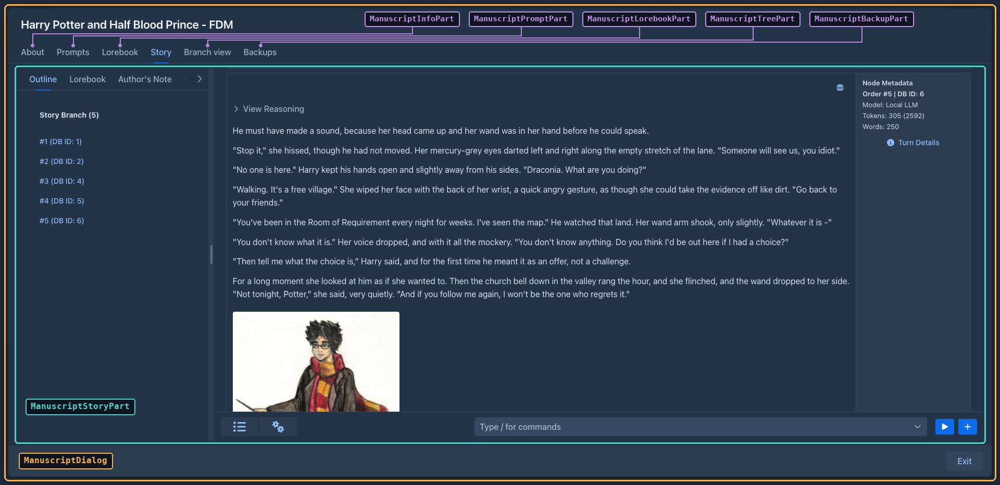

User interface
Marginalia's UI is written in Java with Vaadin Flow 25: the component tree
lives on the server, the browser renders it with Vaadin's web components (Lumo theme, dark color scheme) and sends
events back over HTTP and a push WebSocket. There is no hand-written frontend code apart from one CSS file and a small
connector for the story tree. This page explains how the UI code is organized and the conventions to follow when you
change it. The code is in ui/.
Structure
flowchart TB
subgraph routes["Routes"]
Main["Main /"]
Viewer["Viewer /view, /view/<uuid>"]
end
Main -->|after login| WS["DesktopWorkspace<br/>HTabSheet with left-hand tabs"]
WS --> MP["ManuscriptPart - Books"]
WS --> LP["LorebookPart - Lorebooks"]
WS --> UP["UserPart - Settings"]
WS --> PP["ProtocolPart - Protocols"]
WS --> AP["AIPart - Inference Providers"]
WS --> RP["ResourcesPart - Resources"]
WS --> TrP["TrashPart - Trash"]
WS --> AdP["AdminPart - Admin (footer button)"]
AdP --> DBP["DatabaseBackupPanel"]
TrP --> TG["TrashGrid"]
AdP --> CP["CleanupPanel"]
CP --> TG
MP -->|open a book| MD["ManuscriptDialog<br/>VTabSheet"]
MD --> Info["ManuscriptInfoPart - About"]
MD --> Prompt["ManuscriptPromptPart - Prompts"]
MD --> Lore["ManuscriptLorebookPart - Lorebook"]
MD --> Story["ManuscriptStoryPart - Story"]
MD --> Tree["ManuscriptTreePart - Story tree"]
MD --> Backup["ManuscriptBackupPart - Backups"]
LP --> LV["LorebookView"]
Lore --> LV

The shell, routes and login
AppShellConfig(AppShellConfigurator) sets up the page once:@Push, Lumo stylesheet,@ColorScheme(DARK), full-viewport body,shared-styles.css, page title, PWA metadata.MarginaliaServletis theVaadinServletmapped to/*(withasyncSupportedfor push).-
There are two routes, both extending
LoginCheckRoute:
LoginCheckRoute runs in the route's constructor (showLogin()):
-
On an empty installation it opens
UserDialogin first time mode (create the administrator) and reloads. -
Otherwise it tries a user that is already logged in this session (
authenticatedSessionUser, overridden byMain: the page was reloaded, e.g. by the language selector) and then the Save login cookies (authenticateFromCookie, rotating the secret on success). -
Otherwise it shows a
LoginOverlay(PermissiveLoginOverlay- allows empty passwords to reach the server-side check) with the Save login checkbox. The check passes the client address (LoginCheckRoute.clientAddress()) toUserService.authenticate, which throttles failed logins per address (see Login throttling). -
After a successful login it calls
VaadinService.reinitializeSession(new session id) and the subclass'sproceedWithLogin(login), which fills the session-scopeduserbean, registers the login withSessionManager.userLoggedIn(see Sessions), sets the language of the session from the user's settings (Localization) and builds the content.
Logout deletes the cookies, closes the Vaadin session, invalidates the HTTP session and redirects to the context
root. Cookie names include the context path and the route class (root_Main_llllm_rememberMe_login...), so the workspace
and the viewer keep separate saved logins.
Building blocks
Classes that build components
Most UI classes are not Vaadin components themselves. They are plain classes with a create() method that builds
and returns the component tree, and keep references to the fields they need later:
@Configurable
@Extendable
public class ProtocolPart implements WorkspaceComponent {
@Autowired
private Localization loc;
@Autowired
private ProtocolService protocolService;
private Grid<Protocol> grid;
@Override
public Component create() throws Exception {
VerticalLayout layout = new VerticalLayout();
grid = new Grid<>();
...
return layout;
}
@Override
public void refresh() throws Exception { ... }
}This shape is deliberate:
-
@Configurable- the class is created withnew, and the AspectJ-woven configurer injects its@Autowiredfields (services,Localization, the sessionUser). See AspectJ weaving. -
@Extendable- the class is instrumented at startup so extensions can run code before and after any of its methods and read its local variables (seeExtensions ). Small methods with descriptive local variable names (menu,toolbar,detailLayout) are what make a class easy to extend.
Dialogs (AIDialog, ProtocolDialog, UserDialog, LorebookDialog, ManuscriptDialog...) extend Vaadin's Dialog
but follow the same pattern: construct with the entity, call create(), then open().
The workspace
Workspace is the interface of the top-level layout shown after login (create, refresh, setNavigationLocked,
isNavigationLocked, getOnLogout, setOnLogout). Main, the parts, ApplicationPoint and SessionInformation
only depend on this interface. DesktopWorkspace is the implementation (@Configurable, @Extendable): it builds an
HTabSheet (tabs on the left, a footer with Admin, the language selector, Change Password, Logout) and creates all tab components up
front (the admin part is refreshed only when the user is an administrator and has the Admin button: it refuses anybody else). Each tab is a WorkspaceComponent:
Workspace.setNavigationLocked(true) disables the other tabs and the Admin and Logout buttons, so the user can't
leave the active tab. UserPart locks it while the settings have unsaved changes: it listens to every HasValue
in its layout (extension settings panels included) and unlocks on Save, Discard Changes or refresh().
Main.proceedWithLogin picks PhoneWorkspace instead when the body of the page is narrower than 768 px
(ExtendedClientDetails.getBodyClientWidth()). The choice is made once per login: resizing or rotating the device
does not switch the workspace until the page is reloaded, and a tablet or a phone in landscape gets the desktop one. PhoneWorkspace replaces
the left-hand tab sheet with an AppLayout: the parts are listed in a drawer (opened with the toggle in the top bar)
whose footer holds the language selector, Change Password and Logout, and the active part fills the screen. There is no Admin button
and no AdminPart on a phone: the administration (users, database backups, cleanup, extension install) is only
reachable in the desktop layout. The services still check AdminGuard.requireAdmin() themselves. The user manual
describes this for users in Using Marginalia on a phone. Only the book list, the lorebooks, the settings, the protocols, the models and the trash differ. PhoneManuscriptPart renders the book list
like the Viewer (stacked filters, sort buttons, one column) with the controls of ManuscriptPart; both share the
Add Book flow in NewBookAction. PhoneLorebookPart hosts PhoneLorebookView, a reduced LorebookView: lorebooks can
only be selected (no add, delete, import or export, no new entries) and only the enabled flags and the content of an
entry are editable, every other setting of the lorebook and of an expanded entry is shown as text. PhoneTrashPart
hosts PhoneTrashGrid (see PhoneProtocolPart and PhoneAIPart replace the type, name and
action columns of their desktop lists with a text column (Type: and Name: on two lines) and a buttons column.
PhoneSettingsPart extends UserPart (so the extension settings panels that decorate UserPart.refresh/save keep
working) and only overrides createHeader(): the title, the unsaved changes hint and the Discard/Save buttons are
stacked, and Import backup as new book is left out. The other parts are the desktop ones.
Opening a book on a phone shows the PhoneManuscriptDialog (package ui.dialogs.phone) instead of ManuscriptDialog;
NewBookAction(onClose, true) opens it after Add Book. It is a separate class, not a subclass, so extensions know
which dialog they decorate (decorators of ManuscriptDialog and the desktop parts do not run on a phone). It fills the
screen (the phone-dialog class), the exit button is an icon in the header and the tabs are one scrolling Tabs row
above the content of the selected tab. Every tab is a PhoneManuscriptDialogPart of ui.dialogs.phone.manuscript
(the desktop ManuscriptDialogPart without the tab sheet argument): PhoneManuscriptInfoPart and
PhoneManuscriptPromptPart (one column of fields), PhoneManuscriptLorebookPart (the lorebook of the book and
PhoneLorebookView(true), which hides its own lorebook selection like the pinned LorebookView),
PhoneManuscriptTreePart (stacked search bar), PhoneManuscriptBackupPart (one row per backup) and
PhoneManuscriptStoryPart. The story is a single column in an AppLayout: the outline is its drawer (slid in by the
toggle in the navbar, which also holds the summaries/settings menu bar), the new turn button is at the bottom. Its
ChatMessageCard is only the text of the part under a small header line with two icons: the menu (with Show Prompt)
and a popover with the metadata of the inference (ids, model, protocol, tokens, words) and the turn details (the
right-hand column of the desktop card). Its summaries item opens PhoneSummariesDialog, the SummariesDialog with a fixed 640 px, taller content column (the grid scrolls sideways anyway, so the summaries stay readable and editable). The fixed navbar and drawer of the
AppLayout are kept inside the dialog by the phone-story-layout class.
On the desktop the Admin button is only added for administrators; AdminPart shows the users grid (with the Users can create their own models checkbox, AIService.setUserCreationAllowed) and the
DatabaseBackupPanel, CleanupPanel and extensions tab (with the SHA-256 of each JAR behind a # button next to the version - tooltip, click copies it with
JavascriptLibrary.copyToClipboard - the verification report of each extension and, per
extension, the buttons Stop / Start (OsgiService.stopExtension / startExtension, state Stopped), Log
(ExtensionLogDialog: the end of the extension's log with refresh and clear) and Unload). Note that the admin UI being hidden is not a permission
check - the administrator-only services call AdminGuard.requireAdmin() themselves (see
Services).
Remembering where the user was
The workspace is autosaved so the next login opens it where it was left. Everything that has state worth coming back
to implements Restorable (ui): JsonObject storeState() serializes the state the class needs into a new object and
asks the children it has for theirs (nested under their own key), restoreState(JsonObject self) reads it back and
passes the nested objects on. RestorableState has the defensive readers (string, bool, strings, object) and
put, which leaves out an empty state. Workspace, WorkspaceComponent (default: no state), ManuscriptDialogPart
and PhoneManuscriptDialogPart (default: no state), both book dialogs, LorebookView/PhoneLorebookView and
NewTurnForm are Restorable. What is stored:
Everything is stored by uuid and looked up when it is restored (findForUser), so a book, lorebook, entry or tag that
is gone is skipped: a book that does not exist is not opened, the lorebook stays the default one. The state of an older
version is read the same way, unknown keys are ignored.
WorkspaceAutosave (ui.workspace, one per workspace) keeps the state in UserSetting.workspaceState, an
@ExtendedAttribute(inject = true) JsonObject (so no migration). Workspace.autosave() stores the state of the
whole workspace; the parts call it after the user did something worth coming back to - selected a tab, changed a filter,
opened or closed a book, selected a tab of the book window (ManuscriptDialog.stateChanged()), opened an entry or
chose a lorebook (setOnStateChange of the views), typed into the new turn form (NewTurnForm.setOnChange). It
writes nothing when the state did not change, and failures are only logged. Main.proceedWithLogin calls
Workspace.restoreAutosaved() after create() and refresh(): the autosave is off until then, because building
the workspace fires the same change events and would overwrite the stored state, and it stays off while restoring (the
restoring fires them too). The book window is restored after open(): ManuscriptPart.openManuscript is the one place
that creates and opens it, for the Edit button and for restoring. Code that saves a UserSetting must load it right
before, not hold on to one (UserPart.save does), or it writes back an older workspaceState.
A new part with state overrides the two methods and calls workspace.autosave() (or its owner's callback) when
the user changes the state; a new tab of a dialog needs a name in the partsByKey map of the dialog.
The book window
Opening a book creates a ManuscriptDialog - a full-screen, strictly modal dialog with a VTabSheet of
ManuscriptDialogParts:
The dialog holds the book (getManuscript(), refreshManuscript() reloads it, save() saves it) and
freeze() / unfreeze(), which disable the tabs, the exit button and every part during generation.
ManuscriptStoryPart is the story editor and the largest UI class: the sidebar with one button per part, a
ChatMessageCard per part (Markdown view, edit mode, menu with Edit / Regenerate / Swipe / Branch / View prompt /
Summary / Delete), the New Turn Instructions popover, starting generations and applying the result, the automatic
book backups, and the menu bar of the bottom bar (see
renderStoryContent() redraws only the cards and the outline list: the left tab sheet is created once in create()
(so the selected tab and the tabs of extensions survive), and the reasonings that were open are reopened on the new
cards. PhoneManuscriptStoryPart does the same.
The left bar (leftBar) is a TabDock (ui.widgets), a reusable widget: a row of columns, each a stack of tab sheets, whose
tabs the user can drag out into sheets of their own (a strip between the sheets of a column) or into a column of their own (a
strip between the columns and at the sides) and back (the drag and drop is Flow's DragSource/DropTarget, no JavaScript;
the strips show while a tab is dragged). The columns and the sheets of a column are separated by SplitLayouts the user can
resize; a split layout has two sides, so the cells of a row or column are a chain of nested split layouts, the position of each
being the share of its cell in what is left (chain, shares). When a splitter is dragged the shares of all cells are read
again and stored as size (percent of the dock / of the column) in the layout, onLayoutChange saves them; a cell without a
size gets the average. Tabs have a stable id (add(id, caption, content), the
outline is ManuscriptStoryPart.CHAPTERS_TAB); the layout, {"columns":[{"size":50,"groups":[{"size":50,"tabs":["id", ...]}, ...]}, ...]} (size optional)
(getLayout/setLayout; a layout with groups at the top level, as the dock stored before it had columns, is one column), names tabs only by id and keeps the place of tabs that are not there now, because extensions add
their tabs late (a tab the layout does not know goes to the first sheet). ManuscriptStoryPart stores the layout in the
attributes of the manuscript under $desktopManuscriptStoryPartTabsConfig (TABS_CONFIG_ATTRIBUTE): saveTabsConfig() runs
after a drag, applyTabsConfig() in load() before the story is drawn. The selected tab of each sheet is not part of the
layout but the Restorable state of the dock. PhoneManuscriptStoryPart uses new TabDock(false), one plain sheet.
The tab with the id ManuscriptStoryPart.LOREBOOK_TAB (lorebook) of the left bar is the LorebookPreview (ui.components),
a read only preview of the lore of the book, desktop only (the phone has the PhoneLorebookView). It is a TreeGrid of
Rows (a lorebook or one of its entries) over a TreeData it rebuilds in refresh(lorebook): with the Include sub
lorebooks checkbox the lorebook and every lorebook below it (found breadth first like ProcessLorebookStep does, each
once, so a cycle ends) are the top level rows and their entries the children, otherwise the entries of the lorebook are the
top level rows. The item details of an entry row show the content, rendered with a Markdown component, and the filtering (text or pattern). It saves nothing;
the opened entries and the lorebooks the user closed are kept (as uuids) over a refresh. ManuscriptStoryPart.load()
refreshes it, and onTabEnter() calls load(), so the lore is read again every time the user returns to the Story tab. Like
the other views of this kind the components are built in create(), the injected services are not there in the constructor.
What the desktop and the phone story editor have in common lives in ui.dialogs.story, so the two classes keep only
their layout and the methods extensions decorate (renderStoryContent, createSidebarButton, populateMenuBar,
createCogsMenuItem, the card's createMenuItems, refreshSummaryMenuItems, autosaveAndSwapToMarkdown):
The helpers are @Extendable instances (the tabs create them with new, StoryBackup and StorySupport are
@Configurable), so a decorator of one of their methods applies to the desktop and the phone tab alike. The inner
card classes stay inner classes of the tabs: extensions reach the outer part through this$0.
The story menu bar
The bottom bar of the story editor has a MenuBar with two items, built by small methods so that extensions can add
to it (see Extending the UI):
The checkable Highlight Generated Text item is the diff view: setShowGeneratedDiff(show) stores the flag (a field
of the tab, not saved) and calls ChatMessageCard.renderResponse() of every card, which sets the content of the
response Markdown - with the flag on, the text from GeneratedTextHighlighter.highlight(response, originalResponse, CssStyles.GENERATED_TEXT), which diffs both texts word by word and wraps the shared words in <mark>. The card calls
renderResponse() whenever its response changes (construction, streaming, end of an edit), and
StoryGenerationListener.onResponseChunk copies originalResponse into the card's own ChatMessage while streaming.
The phone tab has no diff view.
The summaries overview
SummariesDialog shows the summaries of the active branch (SummaryService.collectTree) in a TreeGrid<SummaryNode>:
the summaries generation uses are the top level, the summaries a meta summary stands in for are its children
(including the summary it replaced, read from replacedSummary, which has no id). Columns: database id (the
hierarchy column), message id, order in the branch, content, tokens, a checkbox and a delete button. Checkboxes,
delete buttons and the edit pencil exist only on the top level - the text of the merged summaries is part of the hash
of their meta summary, so editing them would invalidate it.
-
Content (
SummaryContent): reasoning (aDetailswithMarkdown, reasoning is mostly markdown), badges (Meta summary, Replaced) and the text as plain text (white-space: pre-wrap, summaries are not markdown and the model's single line breaks must show), in a scrollingDivof a fixed height, so all rows have the same height. The pencil is in a gutter next to the scroll area (not over the text); it swaps the text for aTextAreaof the same size and the buttons for a green check (SummaryService.updateSummaryText) and a red trash icon (back to the Markdown). -
Delete goes through
SummaryRemoval.confirmAndRemove, shared with the part menu of the story editor: a normal summary is confirmed with yes/no, a meta summary asks Unwind / Delete / Cancel (ConfirmDialogwith custom button labels). -
Create meta summary takes the ticked summaries, uses the newest as
fromand the oldest astoand opensSummaryDialogwith a meta request (createMetaSummary); it needs at least two. -
The grid is reloaded after every change (
refresh()): editing, deleting, and closing the dialog of a meta summary.
SummaryDialog is the dialog of one summary: it generates it (startGeneration, streaming into a read-only text area,
with a Stop button), or shows the existing one. It is created with the part, and with the oldest part of the range
for a meta summary. It was an inner class of ManuscriptStoryPart; both the story editor and the overview open it now.
Both dialogs are @Configurable(preConstruction = true) (they use injected services in their constructors) and
@Extendable; the overview's menu bar above the grid is empty, populateMenuBar(bar) is where extensions add tools.
Grids
Lists of entities use Vaadin Grid with a lazy data provider. BackendTableProviderBase (in ui.widgets) is the
common base: the owning part searches for the ids to show (ManuscriptService.searchManuscripts(...) returns ids,
already filtered and sorted), passes them with setIds(ids), and the provider loads only the entities of the visible
page (service.find(id)) and wraps them in a BackendTableItem subclass. It also tracks checked rows.
Widgets
Trash
TrashGrid is a self-contained widget (@Configurable, create it with new TrashGrid(allUsers).create()) over
TrashService: a lazy multi-select Grid<TrashItem> (items identified by their EntityKey, so the selection
survives paging), a filter by type (names from Localization.localizeDomainObject(Class)) and, with allUsers, a
filter by owner and an owner column. allUsers only decides what the widget shows; the service decides what the
current user may see and restore. Restore Selected confirms and calls TrashService.restore; when it returns
blockers the widget shows them in a dialog (nothing was restored), otherwise it refreshes and runs the listeners from
addRestoreListener (TrashPart uses it to refresh the whole workspace). Delete Permanently (createDeleteButton,
the field deleteButton) is enabled while the selection has only types of TrashService.getPermanentlyDeletableTypes()
(story parts, lorebook entries), confirms and calls TrashService.deletePermanently, shows the reasons in a dialog when
it is blocked and refreshes the table otherwise (nothing to refresh elsewhere, nothing came back). The Extended Content link opens the JSON
from TrashService.getExtendedContent in a read-only text area. TrashPart (the Trash tab, allUsers for
administrators) and CleanupPanel (a Details section, created when first opened) both use it.
PhoneTrashGrid (used by PhoneTrashPart) subclasses it through the createToolbar() (it adds the same createDeleteButton()) and addColumns() hooks: the
filters are stacked over the whole width, the description is behind an info button (a Popover) instead of above the
table (createDescription()), and the table has only the check box column and one content column that
shows name, type, owner (allUsers), delete time and the Extended Content link below each other.
Generic dialogs: ConfirmDialog.show(message, onYes), TextInputDialog.Builder, ListSelectDialog,
ErrorDialog (message and expandable stack trace), ProgressBarDialog. ExtensionLogDialog.show(bundle, name) is the
read-only, monospace view of an extension's log. UsageDialog.show() is the read-only table of every user's Usage (administrators). AILimitsDialog.show(ai) is the table of the limits of a shared AI with add / edit (AILimitEditDialog) / delete, AILimitInfoDialog.show(ai) the current user's limit and usage of it.
Conventions
Text
Never hard-code user-visible text. Add a key to loc/L.java and the text to LocalizationBundleEN (and LocalizationBundleJP), and use
loc.getValue(L.KEY) (Localization is injected into every UI class). Date formats come from the same bean
(loc.getDateFormat()...). The name of a kind of entity (book, lorebook...) is loc.localizeDomainObject(entityClass); it falls back to the closest known superclass, then to the simple class name, so a new entity type needs a mapping in LocalizationImpl.loadMaps(). The texts are in the language of the user's session, so never keep a text in a field that outlives the page or the request - look it up when you show it (Localization).
Errors
Wrap event handlers in try/catch and report unexpected exceptions with
UIUtils.internalServerError(loc, e) - it logs the exception and opens an ErrorDialog with the stack trace.
Expected problems (validation, missing configuration) are shown with Notification.error(...) or a message next to
the field; UIUtils.showValidationErrors(loc, e) formats a binder's ValidationException. Failures of a request to the
model API (InferenceException: wrong key, wrong URL, timeout...) go through UIUtils.inferenceError(loc, e), which
shows the localized cause (InferenceErrors) as a notification and falls back to internalServerError for anything
else. AIDialog has, for the type Extension (offered while an extension provides AIs), a Provider selector and the settings form of the chosen ExtensionAIFactory (see Inference providers from a plugin); the type of an existing AI is read-only. It has the Test Connection button (InferenceService.testConnection() with the values of the form) and, for administrators only, the Shared with all users checkbox. The API key stays editable when its tab is not the one shown (the tab sheet disables the hidden tabs, so the dialog keeps its own apiKeyEditable flag), and Refresh of the model list keeps the model that was selected.
AIPart / PhoneAIPart (the type column shows the name of the extension's provider, AITypes.label) list the user's AIs and the shared ones with the user's own Usage (tokens sent / generated); the edit and delete buttons are only shown for AIs the user owns (AIService.isOwnedByCurrentUser) and the add button only when AIService.canCreate(). The service refuses the same things itself. Rows of shared AIs have an info button (AILimitInfoDialog), and the owning administrator a Limits button (AILimitsDialog, AILimitService). AIPart also has a Usage per user button, visible to administrators only, that opens UsageDialog (UsageService.findAllUsages(): user, model, tokens sent / generated, requests, last used); the service checks the administrator itself.
Saving
Most forms save automatically: value change listeners call an autosave() method of the part (guarded so that
loading values into the fields doesn't trigger a save). The story editor saves an edited part when the edit is
closed (autosaveAndSwapToMarkdown) and before a generation starts (autosaveAndSwapAllToMarkdown). Entities held
by the UI are detached copies - reload them through the service before changing them, and keep the object returned
by save.
Background work and push
Vaadin component state may only be touched on a thread holding the session lock. The rules:
-
Long work (generation, summaries, backups, imports) runs on another thread; the UI thread returns immediately.
-
Updates from that thread go through
ui.access(() -> ...), with theUIcaptured on the UI thread (UI.getCurrent()isnullelsewhere).UIPushGuard.push(ui)sends them right away. -
Service calls on that thread need the user's request scope - capture
ThreadCopyRequestAttributes.create()on the UI thread and wrap the work inInRequestScope(see The current user). -
ThreadAccessDialogpackages all of this for dialogs:run()startsrunInThread()on a new thread in the request scope, andvaadinLocked(...)/vaadinLockedSync(...)run UI updates withui.access/ui.accessSynchronouslyand push.ProgressBarDialogbuilds on it.
The story editor is the main example: startGeneration freezes the book window, calls
StoryGenerationService.generateNextTurn with a GenerationListener, and every callback (onNodeCreated,
onResponseChunk, onComplete...) updates the cards inside ui.access(...) and pushes.
Browser-side code
Prefer Java components. When the browser has to do something (scroll positions, element sizes), the script is a
static method of ui.JavascriptLibrary - UI classes don't call executeJs themselves. The element is passed
explicitly ($0, not this), and a script that returns a value returns the PendingJavaScriptResult, read with
.then(...); see UIUtils.getPositionAndSizeOfElement, the scroll handling in ManuscriptStoryPart and
JavascriptLibrary.scrollTextAreaToBottom (the extension log is shown scrolled to its newest line).
Extensions keep their own scripts.
There are three JavaScript modules, all documented in Custom components. src/main/frontend/chart-connector.js is loaded by ChartJs (@JsModule, with the
npm package chart.js); it registers Chart.js and draws the configuration it gets from
JavascriptLibrary.renderChart, taking the text and grid colors from the Lumo variables of the page.
src/main/frontend/treant-connector.js is loaded by TreantTree (@JsModule) together
with the npm packages treant-js and raphael (@NpmPackage) and treant's CSS (@CssImport). It draws the story
tree; TreantTree sends the tree as JSON and receives clicks back: node-click (a card was clicked, with the
data-node-id of the card) and node-goto (an element with data-goto-id inside a card was clicked; the card itself
is not clicked then). src/main/frontend/graph-connector.js is loaded by GraphView (npm package cytoscape).
Searching the story tree
ManuscriptTreePart has a search bar above the tree: an editable ComboBox (the last 15 searches; typed text is a
custom value that the part sets as the value) and a button. A search calls ChatMessageService.searchFulltext and
keeps the result as lastQuery and hitSnippets (part id → text around the match); renderTree then adds the CSS
class search-hit (shared-styles.css) to the cards of the found parts and, in them, the snippet and a "Show in story"
link (data-goto-id). Stretches of more than 20 parts that would be collapsed stay open when they contain a hit.
The search is kept while the tab is open and repeated on every onTabEnter; load (opening the book) clears it.
The link fires NodeGotoEvent. onNodeGoto resolves the id among the messages of the book only, asks
ChatMessageService.findLeafFor for the end of the branch to show, makes it the book's active leaf when it is not
(ManuscriptDialog.save) and calls ManuscriptDialog.showMessage(id). That tells ManuscriptStoryPart which part to
scroll to (scrollToMessageOnNextRender) and selects the story tab; entering the tab renders the story, which scrolls to
the part (and flashes it) instead of restoring the saved scroll position.
Styles
Global styles are in src/main/frontend/styles/shared-styles.css (imported by AppShellConfig): spacing helpers,
the loading indicator, the story text (.chat-message), the story tree (.Treant) and the utility classes
(.text-secondary, .hint-text, .min-width-0...). The book style of the reader and editor
(.manuscript-styles .chat-message-markdown) is in reading-mode-styles.css, imported separately by AppShellConfig. Components are
styled by adding these classes (addClassName(CssStyles.TEXT_SECONDARY)), not with getStyle().set(...); keep that
only for values computed at runtime (the combo box overlay width). A new class goes
into the stylesheet and into CssStyles together. All vaadin-markdown elements wrap long lines (and break long words of
paragraphs, code, headings, lists, quotes, tables and links) through the rules there, so a Markdown needs no extra call. Class names used from Java are constants in
CssStyles; column widths and offsets in UIConstants. Use Lumo's CSS custom properties (--lumo-space-m,
--lumo-contrast-10pct...) instead of fixed colors, so the dark theme stays consistent.
Styles of plugins are not in the stylesheet. Main and Viewer (the ApplicationEntryPoints) own a CssRegistry that
injects the CSS returned by loaded extensions (ExtensionHasCss.getCss) as <style> elements and removes it when the
extension is unloaded (Styles of a plugin).
Extension points
Every class annotated @Extendable can be extended by plugins: a decorator registered for a class and method name
runs before and after that method and can read its arguments and local variables. The UI classes that are
@Extendable:
New screens, dialogs and components with their own logic get @Extendable too (a nested class needs its own
annotation), and each of their instrumented methods gets a @PublicAPI that
declares its arguments, local variables and return type. Left out on purpose: classes with only static methods (TemplateHints, SummaryRemoval, UIUtils; static
methods are not instrumented), the generic dialogs and widgets used everywhere (ConfirmDialog, ErrorDialog,
ProgressBarDialog, Notification, HTabSheet, the BackendTable* providers), the plumbing (servlet, app shell,
initializer, ThreadCopyRequestAttributes) and small data wrappers.
The bundled plugins hook into these methods:
Because plugins depend on method names and local variable names, renaming or restructuring these methods breaks
plugins. When you change an @Extendable class, check the plugins in marginalia/plugins/ and mention the change
in the release notes. New UI that should be extensible: put it in an @Extendable class, build it in small,
well-named methods, and keep the components extensions will want (menus, toolbars, layouts) in local variables or
fields with clear names. See Extending the UI.
Viewer
Viewer (/view) is a separate, reader-only route. It requires a login like the workspace (with its own saved-login
cookies). Without a parameter it lists the user's own books, with name and tag filters and sorting by last opened or
name; other users' published books are opened by their link; with /view/<uuid> it shows the book's active branch as Markdown in
the book's reading style. Books are resolved only through ManuscriptService.findViewable(uuid) (owner or
published, never deleted). The layout is made for phones.